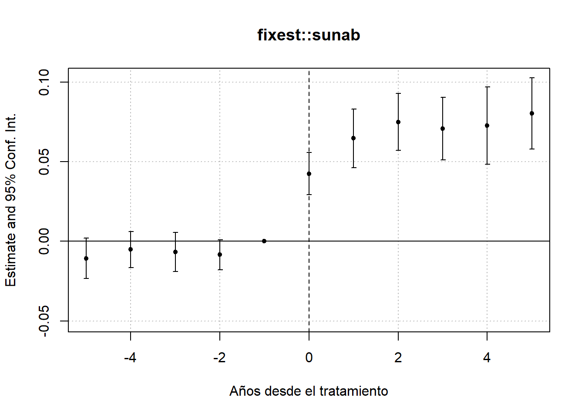

table(filter(wd, year==1996)$divyear)
1950 1969 1970 1971 1972 1973 1974 1975 1976 1977 1980 1984 1985 Inf
9 2 2 7 3 11 3 2 1 3 1 1 1 5 Stevenson, B. & Wolfers, J. (2006)1 estudian los efectos de la introducción de leyes que permiten el divorcio unilateral en los Estados Unidos. La librería bacondecomp incluye los datos usados en dicho artículo (debe instalar y cargar la librería). Usaremos los datos de 1964 a 1996 para mostrar cómo impactan las leyes de divorcio express (unilateral) a la tasa de suicidios en mujeres.
Al correr el pedazo de código anterior, obtendrá un objeto de datos wd en donde la variable de impacto es la tasa de suicidios en mujeres, suicide_rate, st identifica a los estados, year identifica a los años y divyear es el año en que se introdujo la legislación del divorcio unilateral. La última fila del código crea el indicador de tratamiento unilaterial, que toma el valor de 1 para los estados tratados en los periodos post tratamiento.
::: {.cell}
wd <- divorce %>%
filter(year>=1964 & year<=1996 & sex==2) %>%
mutate(suicide_rate=suicide*1000000/(stpop*fshare),
year=as.numeric(year),
divyear = ifelse(divyear>1996, Inf, divyear),
unilateral=ifelse(year>divyear, 1, 0)):::
[5 puntos] Presente una tabla donde muestre el número de estados que es tratado en cada periodo del panel. ¿Cuántos estados son nunca tratados? ¿Cuántos estados son siempre tratados?
Si hacemos un tabulado de divyear para un año fijo, notamos cuántos estados se vuelven tratados en cada año. Solo 5 estados son nunca tratados. Por otro lado, como el panel comienza en 1964 y hay 9 estados tratados en 1950, estos 9 estados son siempre tratados.
table(filter(wd, year==1996)$divyear)
1950 1969 1970 1971 1972 1973 1974 1975 1976 1977 1980 1984 1985 Inf
9 2 2 7 3 11 3 2 1 3 1 1 1 5 [5 puntos] Como punto de partida, estime el efecto del tratamiento sobre suicide_rate usando efectos fijos por estado y año (TWFE) y empleando una librería específica para efectos fijos, como felm. Tome en cuenta la agrupación de los errores. Interprete sus resultados.
Usando felm podemos incorporar ya el nivel de agrupación de los errores:
summary(felm(suicide_rate ~ unilateral | st + year | 0 | st,
data = wd))
Call:
felm(formula = suicide_rate ~ unilateral | st + year | 0 | st, data = wd)
Residuals:
Min 1Q Median 3Q Max
-37.517 -6.157 -0.141 5.577 57.004
Coefficients:
Estimate Cluster s.e. t value Pr(>|t|)
unilateral -3.777 2.201 -1.716 0.0923 .
---
Signif. codes: 0 '***' 0.001 '**' 0.01 '*' 0.05 '.' 0.1 ' ' 1
Residual standard error: 10.85 on 1599 degrees of freedom
Multiple R-squared(full model): 0.6844 Adjusted R-squared: 0.668
Multiple R-squared(proj model): 0.007963 Adjusted R-squared: -0.04353
F-statistic(full model, *iid*):41.77 on 83 and 1599 DF, p-value: < 2.2e-16
F-statistic(proj model): 2.945 on 1 and 50 DF, p-value: 0.09231 [5 puntos] Compruebe que puede obtener el mismo resultado con una regresión lineal usando el paquete lm e incluyendo, además de la variable de tratamiento, dummies de estado y de año.
Estimamos con dummies:
summary(m1 <- lm(suicide_rate ~ unilateral + factor(st) + factor(year),
data = wd))$coef[1:2,1:3] Estimate Std. Error t value
(Intercept) 56.732642 2.468251 22.984953
unilateral -3.776552 1.054148 -3.582562Luego estimamos errores agrupados:
modelsummary(list(m1),
output = 'gt',
vcov=clubSandwich::vcovCR(m1, type='CR1', cluster=wd$st),
coef_map = "unilateral",
gof_map = "nobs")| (1) | |
|---|---|
| unilateral | -3.777 |
| (2.200) | |
| Num.Obs. | 1683 |
Obtenemos los mismos coeficientes. Aquí también podrán volver a comprobar la importancia de usar errores agrupados. El error agrupado es más de dos veces más grande que el error clásico.
[10 puntos] Realice la descomposición de Goodman-Bacon (2021). Construya un gráfico donde muestre en el eje \(x\) el peso otorgado a cada comparación 2x2 que el estimador de TWFE realiza mecánicamente y en el eje \(y\) el efecto estimado correspondiente a cada comparación. Interprete el gráfico obtenido.
Como vimos en laboratorio, la descomposición de Bacon se puede obtener con la función bacon:
#Goodman-Bacon decomposition
df_bacon <- bacon(suicide_rate ~ unilateral,
data = wd,
id_var = "st",
time_var = "year") type weight avg_est
1 Earlier vs Later Treated 0.11558 0.13489
2 Later vs Always Treated 0.41990 -6.95245
3 Later vs Earlier Treated 0.23125 2.33743
4 Treated vs Untreated 0.23328 -6.05881coef_bacon <- sum(df_bacon$estimate * df_bacon$weight)
print(paste("Suma ponderada de la descomposición =", round(coef_bacon, 4)))[1] "Suma ponderada de la descomposición = -3.7766"twfe <- felm(suicide_rate ~ unilateral | st + year | 0 | st,
data = wd)
#Gráfico----
df_bacon %>%
ggplot(aes(x=weight,
y=estimate,
shape=type)) +
geom_point() +
geom_hline(yintercept = round(twfe$coefficients, 4))Las comparaciones que más pesan en el estimador de efectos fijos son las de estados tratados con los que siempre estuvieron tratados en el panel, recibiendo dos de esas comparaciones alrededor de 13 y el 7% del peso (los dos triángulos más hacia la derecha). otra comparación que recibe alrededor de 7% del peso es la de los tratados con los nunca tratados (cruz más hacia la derecha). En total, las comparaciones con los estados que iniciaron siendo tratados se llevan el 42% del peso. Las comparaciones entre los tratados tarde y los tratados temprano también reciben un peso alto de 23%.
[10 puntos] Implemente el estimador de Callaway & Sant’Anna (2021) para estimar los efectos del tratamiento específicos para cada cohorte, usando el paquete did. Utilice como grupo de comparación los estados no tratados aún. La columna stid es un identificador numérico de los estados (lo requerirá cuando use att_gt del paquete did).
atts_nyt <- att_gt(yname = "suicide_rate",
tname = "year",
idname = "stid",
gname = "divyear",
data = wd,
control_group = "notyettreated",
est_method = 'reg',
bstrap = TRUE,
biters = 1000,
print_details = FALSE,
panel = TRUE)
summary(atts_nyt)
Call:
att_gt(yname = "suicide_rate", tname = "year", idname = "stid",
gname = "divyear", data = wd, panel = TRUE, control_group = "notyettreated",
bstrap = TRUE, biters = 1000, est_method = "reg", print_details = FALSE)
Reference: Callaway, Brantly and Pedro H.C. Sant'Anna. "Difference-in-Differences with Multiple Time Periods." Journal of Econometrics, Vol. 225, No. 2, pp. 200-230, 2021. <https://doi.org/10.1016/j.jeconom.2020.12.001>, <https://arxiv.org/abs/1803.09015>
Group-Time Average Treatment Effects:
Group Time ATT(g,t) Std. Error [95% Simult. Conf. Band]
1969 1965 -1.9053 9.4502 -43.2278 39.4173
1969 1966 4.5124 13.0586 -52.5882 61.6131
1969 1967 0.5622 5.3331 -22.7574 23.8819
1969 1968 5.1789 3.0237 -8.0425 18.4003
1969 1969 -0.7447 5.8486 -26.3184 24.8291
1969 1970 -10.2717 9.2380 -50.6662 30.1228
1969 1971 -12.3880 7.9866 -47.3104 22.5345
1969 1972 -4.1259 3.4861 -19.3695 11.1176
1969 1973 1.4524 7.5784 -31.6851 34.5898
1969 1974 -1.4022 5.1152 -23.7694 20.9649
1969 1975 -0.9265 4.4326 -20.3086 18.4555
1969 1976 -12.7344 6.1238 -39.5116 14.0428
1969 1977 -2.3415 9.4819 -43.8025 39.1194
1969 1978 -11.4247 17.4050 -87.5307 64.6813
1969 1979 -6.0427 8.4296 -42.9022 30.8169
1969 1980 -7.9345 5.3759 -31.4415 15.5724
1969 1981 -1.7430 9.8202 -44.6832 41.1972
1969 1982 -6.7020 9.3490 -47.5820 34.1779
1969 1983 4.7154 9.8438 -38.3278 47.7587
1969 1984 -9.5175 12.9128 -65.9806 46.9456
1969 1985 5.9598 16.5389 -66.3592 78.2787
1969 1986 -8.5962 10.8731 -56.1402 38.9478
1969 1987 -8.6897 7.3489 -40.8239 23.4445
1969 1988 -11.9815 7.8136 -46.1475 22.1845
1969 1989 -5.9781 14.7507 -70.4777 58.5216
1969 1990 -7.7327 11.5664 -58.3086 42.8432
1969 1991 -14.7659 10.6440 -61.3083 31.7765
1969 1992 -6.6956 6.0147 -32.9955 19.6044
1969 1993 0.5290 10.4018 -44.9543 46.0123
1969 1994 -6.1575 15.5254 -74.0446 61.7295
1969 1995 -6.7870 16.3071 -78.0920 64.5181
1969 1996 3.0338 13.1707 -54.5571 60.6248
1970 1965 2.4919 3.2455 -11.6995 16.6834
1970 1966 1.8500 3.2233 -12.2444 15.9444
1970 1967 -2.0438 4.2059 -20.4348 16.3472
1970 1968 -3.7538 7.6536 -37.2201 29.7125
1970 1969 9.0725 3.8717 -7.8572 26.0022
1970 1970 0.3548 4.6383 -19.9270 20.6367
1970 1971 -1.9698 3.3164 -16.4713 12.5317
1970 1972 -1.4067 6.4131 -29.4490 26.6356
1970 1973 -11.2801 3.9035 -28.3487 5.7885
1970 1974 -11.1775 3.5160 -26.5518 4.1969
1970 1975 -12.0330 6.2360 -39.3010 15.2350
1970 1976 -17.7592 7.9127 -52.3588 16.8404
1970 1977 -16.3994 4.7731 -37.2703 4.4716
1970 1978 -29.1877 10.4169 -74.7371 16.3618
1970 1979 -26.8802 12.3488 -80.8770 27.1166
1970 1980 -39.5660 11.2593 -88.7987 9.6668
1970 1981 -30.0122 11.2290 -79.1128 19.0884
1970 1982 -36.1714 10.7430 -83.1468 10.8039
1970 1983 -31.0969 16.2077 -101.9672 39.7735
1970 1984 -31.4749 17.2541 -106.9208 43.9710
1970 1985 -30.6346 19.3823 -115.3864 54.1172
1970 1986 -37.0754 20.2897 -125.7953 51.6444
1970 1987 -37.6630 22.4908 -136.0074 60.6814
1970 1988 -43.0563 21.5567 -137.3161 51.2035
1970 1989 -45.1314 18.6974 -126.8883 36.6255
1970 1990 -43.1765 21.0074 -135.0346 48.6816
1970 1991 -49.9116 20.9584 -141.5555 41.7322
1970 1992 -50.9515 16.3952 -122.6419 20.7389
1970 1993 -44.5526 22.6533 -143.6073 54.5021
1970 1994 -51.5405 17.7308 -129.0708 25.9898
1970 1995 -48.4108 22.1367 -145.2067 48.3852
1970 1996 -48.0618 21.9354 -143.9776 47.8541
1971 1965 -2.2110 3.5254 -17.6262 13.2042
1971 1966 -5.9450 3.4186 -20.8934 9.0033
1971 1967 6.1535 3.6915 -9.9879 22.2949
1971 1968 5.3039 3.7317 -11.0135 21.6214
1971 1969 -4.8826 3.8161 -21.5692 11.8041
1971 1970 0.5878 5.7350 -24.4891 25.6647
1971 1971 -7.5805 5.7081 -32.5399 17.3788
1971 1972 -11.4260 7.0021 -42.0439 19.1919
1971 1973 -5.8221 8.1224 -41.3383 29.6941
1971 1974 5.7926 5.3600 -17.6448 29.2301
1971 1975 0.0590 5.5380 -24.1567 24.2747
1971 1976 -0.7920 7.9273 -35.4553 33.8713
1971 1977 0.5899 8.9262 -38.4413 39.6211
1971 1978 -9.5946 10.2272 -54.3147 35.1255
1971 1979 -8.8180 5.5724 -33.1840 15.5481
1971 1980 -15.0039 7.0650 -45.8966 15.8888
1971 1981 -6.0810 8.2446 -42.1316 29.9697
1971 1982 -15.5575 8.9797 -54.8224 23.7073
1971 1983 -6.7973 5.4601 -30.6723 17.0777
1971 1984 -8.1090 7.2149 -39.6570 23.4390
1971 1985 -9.3683 8.1036 -44.8022 26.0657
1971 1986 -16.9260 7.0612 -47.8022 13.9503
1971 1987 -12.9962 11.0888 -61.4837 35.4913
1971 1988 -14.6487 8.6182 -52.3330 23.0356
1971 1989 -18.7126 9.0030 -58.0793 20.6541
1971 1990 -17.6198 6.8713 -47.6656 12.4260
1971 1991 -17.2789 8.8497 -55.9754 21.4177
1971 1992 -22.1825 10.1616 -66.6156 22.2507
1971 1993 -9.1278 9.8019 -51.9882 33.7326
1971 1994 -13.7091 8.8300 -52.3197 24.9015
1971 1995 -15.3270 7.7167 -49.0692 18.4152
1971 1996 -11.2124 9.5150 -52.8183 30.3935
1972 1965 1.9641 1.9592 -6.6029 10.5311
1972 1966 2.3826 6.0036 -23.8689 28.6341
1972 1967 -3.8865 5.6997 -28.8092 21.0362
1972 1968 7.6954 2.5911 -3.6347 19.0255
1972 1969 -8.7084 2.9782 -21.7308 4.3140
1972 1970 0.1004 2.4452 -10.5917 10.7925
1972 1971 1.1463 3.5737 -14.4802 16.7727
1972 1972 -4.8115 4.5952 -24.9048 15.2818
1972 1973 -2.3073 6.1534 -29.2140 24.5995
1972 1974 0.7950 5.0384 -21.2359 22.8259
1972 1975 -2.8930 4.3396 -21.8687 16.0827
1972 1976 -2.9838 9.9063 -46.3003 40.3328
1972 1977 2.8759 5.9651 -23.2072 28.9590
1972 1978 -13.9499 6.8678 -43.9802 16.0804
1972 1979 -4.7118 9.7238 -47.2305 37.8068
1972 1980 -9.9424 6.7786 -39.5829 19.6980
1972 1981 0.7622 6.7793 -28.8814 30.4058
1972 1982 -5.7949 7.1999 -37.2776 25.6878
1972 1983 -2.5286 7.4335 -35.0326 29.9755
1972 1984 -5.7192 8.0445 -40.8949 29.4564
1972 1985 -8.5492 8.4083 -45.3157 28.2172
1972 1986 -3.2909 6.4394 -31.4479 24.8661
1972 1987 -14.5853 8.2252 -50.5512 21.3807
1972 1988 -12.6795 6.6380 -41.7052 16.3462
1972 1989 -10.9845 7.7107 -44.7007 22.7318
1972 1990 -7.7794 7.1721 -39.1407 23.5818
1972 1991 -13.7033 5.3608 -37.1440 9.7375
1972 1992 -11.0100 8.5868 -48.5572 26.5372
1972 1993 -17.3770 7.3323 -49.4385 14.6845
1972 1994 -16.6543 7.6463 -50.0888 16.7801
1972 1995 -16.0626 6.7463 -45.5617 13.4364
1972 1996 -13.6292 5.3274 -36.9239 9.6656
1973 1965 -1.6544 3.6553 -17.6378 14.3290
1973 1966 -3.5308 4.2492 -22.1109 15.0493
1973 1967 5.5388 5.9694 -20.5633 31.6409
1973 1968 -4.1286 5.4300 -27.8721 19.6149
1973 1969 1.9470 4.1277 -16.1021 19.9961
1973 1970 0.3836 5.0377 -21.6443 22.4115
1973 1971 -0.4064 6.0923 -27.0459 26.2331
1973 1972 -0.7103 6.4580 -28.9490 27.5285
1973 1973 9.0122 6.8319 -20.8611 38.8855
1973 1974 7.0826 6.4869 -21.2824 35.4477
1973 1975 8.7932 9.9236 -34.5993 52.1858
1973 1976 5.5815 6.8426 -24.3386 35.5017
1973 1977 9.2638 7.3913 -23.0558 41.5834
1973 1978 -2.8479 7.7080 -36.5521 30.8562
1973 1979 3.5441 7.8957 -30.9808 38.0691
1973 1980 -3.7998 8.8765 -42.6137 35.0142
1973 1981 3.7874 8.4621 -33.2142 40.7890
1973 1982 -2.3342 9.9377 -45.7881 41.1197
1973 1983 0.3746 7.1473 -30.8781 31.6274
1973 1984 -4.0602 9.1920 -44.2535 36.1331
1973 1985 -3.3503 6.9204 -33.6110 26.9103
1973 1986 -9.9416 4.5522 -29.8469 9.9637
1973 1987 -10.5611 9.6068 -52.5682 31.4460
1973 1988 -13.3770 9.8604 -56.4928 29.7389
1973 1989 -9.7072 6.7206 -39.0938 19.6794
1973 1990 -12.5464 6.0971 -39.2070 14.1141
1973 1991 -15.9396 7.1855 -47.3590 15.4799
1973 1992 -17.9985 7.4115 -50.4062 14.4093
1973 1993 -13.8426 8.0907 -49.2202 21.5350
1973 1994 -9.0985 5.9595 -35.1573 16.9604
1973 1995 -12.4104 4.1088 -30.3768 5.5560
1973 1996 -14.4985 5.1202 -36.8871 7.8901
1974 1965 -3.4980 5.1130 -25.8554 18.8594
1974 1966 4.0405 6.0221 -22.2920 30.3731
1974 1967 -2.4469 2.6701 -14.1223 9.2285
1974 1968 -4.1701 5.7847 -29.4648 21.1245
1974 1969 3.0794 2.0438 -5.8576 12.0164
1974 1970 3.9844 2.5215 -7.0411 15.0099
1974 1971 -7.0304 3.2062 -21.0501 6.9892
1974 1972 6.3385 3.6930 -9.8098 22.4868
1974 1973 0.5656 5.2289 -22.2987 23.4299
1974 1974 -2.4409 4.0601 -20.1944 15.3126
1974 1975 1.3647 5.3665 -22.1011 24.8305
1974 1976 -3.5756 5.8726 -29.2545 22.1033
1974 1977 -4.0728 5.7804 -29.3483 21.2027
1974 1978 -8.9231 5.6213 -33.5031 15.6568
1974 1979 -1.7408 6.1245 -28.5209 25.0393
1974 1980 -9.7770 5.3741 -33.2759 13.7219
1974 1981 -2.8322 5.8798 -28.5423 22.8778
1974 1982 -7.4517 4.9418 -29.0604 14.1570
1974 1983 -4.3400 7.4102 -36.7422 28.0621
1974 1984 -7.8279 6.6227 -36.7868 21.1309
1974 1985 0.9048 10.5153 -45.0749 46.8846
1974 1986 -3.4953 9.1102 -43.3308 36.3402
1974 1987 -9.3045 9.2781 -49.8745 31.2654
1974 1988 -9.0434 8.6678 -46.9445 28.8576
1974 1989 -6.4758 10.5248 -52.4972 39.5456
1974 1990 -7.6369 8.7947 -46.0929 30.8191
1974 1991 -14.7133 7.7131 -48.4399 19.0132
1974 1992 -14.7711 8.1981 -50.6184 21.0763
1974 1993 -11.2274 9.6384 -53.3730 30.9181
1974 1994 -14.4350 10.9621 -62.3684 33.4984
1974 1995 -13.4194 9.9518 -56.9352 30.0965
1974 1996 -14.8017 10.3039 -59.8571 30.2538
1975 1965 18.6039 14.2687 -43.7880 80.9957
1975 1966 -3.3872 3.6336 -19.2756 12.5012
1975 1967 -2.4321 2.2490 -12.2660 7.4019
1975 1968 7.3667 5.3270 -15.9264 30.6599
1975 1969 -4.2480 6.7977 -33.9718 25.4759
1975 1970 -11.4912 8.0791 -46.8183 23.8359
1975 1971 5.6632 8.7868 -32.7583 44.0846
1975 1972 -15.6310 7.4828 -48.3505 17.0885
1975 1973 16.2449 6.3949 -11.7176 44.2074
1975 1974 -0.4082 6.1385 -27.2498 26.4334
1975 1975 -2.3510 2.5727 -13.6007 8.8987
1975 1976 -2.3824 5.7911 -27.7047 22.9398
1975 1977 -4.1345 9.4235 -45.3401 37.0712
1975 1978 -7.0822 6.5201 -35.5924 21.4281
1975 1979 -12.0112 14.7400 -76.4642 52.4418
1975 1980 -10.7602 5.3882 -34.3209 12.8004
1975 1981 -7.1236 5.2634 -30.1386 15.8914
1975 1982 -10.5685 7.2107 -42.0982 20.9612
1975 1983 -9.0308 6.3022 -36.5879 18.5264
1975 1984 9.8022 5.8237 -15.6630 35.2673
1975 1985 -5.6163 8.3116 -41.9601 30.7275
1975 1986 -5.2183 4.2420 -23.7673 13.3306
1975 1987 -0.8638 5.3408 -24.2173 22.4898
1975 1988 -15.3668 10.6171 -61.7916 31.0581
1975 1989 -5.4933 6.2749 -32.9312 21.9445
1975 1990 8.5067 6.1229 -18.2667 35.2800
1975 1991 0.7631 6.0058 -25.4980 27.0242
1975 1992 -4.2255 5.7816 -29.5065 21.0555
1975 1993 1.1200 2.6826 -10.6102 12.8502
1975 1994 -8.3655 7.3537 -40.5208 23.7898
1975 1995 1.8041 3.8236 -14.9153 18.5235
1975 1996 -6.9207 5.1899 -29.6141 15.7727
1976 1965 -11.0522 1.6949 -18.4636 -3.6408 *
1976 1966 0.1018 2.0585 -8.8995 9.1030
1976 1967 -5.9143 2.1193 -15.1815 3.3528
1976 1968 -1.6479 2.0375 -10.5570 7.2612
1976 1969 -6.6407 1.7131 -14.1313 0.8498
1976 1970 8.5784 1.9246 0.1629 16.9939 *
1976 1971 4.0973 2.5989 -7.2668 15.4614
1976 1972 -0.9903 2.7346 -12.9476 10.9671
1976 1973 -20.1263 3.7378 -36.4703 -3.7823 *
1976 1974 39.6133 2.4303 28.9865 50.2401 *
1976 1975 -3.5747 2.5435 -14.6964 7.5469
1976 1976 3.7698 5.4002 -19.8432 27.3828
1976 1977 33.5942 4.5442 13.7242 53.4643 *
1976 1978 -3.1195 2.2512 -12.9634 6.7244
1976 1979 1.3342 7.0549 -29.5142 32.1826
1976 1980 -10.4124 3.6155 -26.2216 5.3967
1976 1981 -10.4368 5.7455 -35.5596 14.6860
1976 1982 -12.4922 3.7791 -29.0168 4.0324
1976 1983 -15.8081 5.8290 -41.2961 9.6799
1976 1984 -20.6870 2.6970 -32.4798 -8.8942 *
1976 1985 -0.2053 6.9868 -30.7559 30.3453
1976 1986 -27.7992 8.1679 -63.5147 7.9164
1976 1987 -9.9985 5.2150 -32.8020 12.8051
1976 1988 -22.8540 6.2365 -50.1242 4.4162
1976 1989 -14.3020 6.6385 -43.3298 14.7258
1976 1990 -16.7275 3.8271 -33.4622 0.0072
1976 1991 -29.9838 5.5425 -54.2192 -5.7484 *
1976 1992 -35.9431 6.1194 -62.7012 -9.1850 *
1976 1993 -33.5630 5.7015 -58.4936 -8.6324 *
1976 1994 -19.1785 7.1479 -50.4337 12.0767
1976 1995 -18.8943 7.4487 -51.4648 13.6762
1976 1996 -20.0712 7.6293 -53.4315 13.2891
1977 1965 6.8982 12.3317 -47.0237 60.8202
1977 1966 -11.1214 9.2556 -51.5927 29.3500
1977 1967 10.8566 5.9689 -15.2434 36.9567
1977 1968 -11.0425 11.8664 -62.9303 40.8452
1977 1969 10.1932 12.9266 -46.3304 66.7167
1977 1970 2.9004 6.3678 -24.9436 30.7443
1977 1971 3.0530 9.5109 -38.5346 44.6407
1977 1972 -0.6535 10.5072 -46.5977 45.2907
1977 1973 3.1405 8.6316 -34.6025 40.8836
1977 1974 -14.4506 6.0873 -41.0681 12.1668
1977 1975 -0.1240 4.8241 -21.2183 20.9703
1977 1976 5.5263 18.8964 -77.1011 88.1537
1977 1977 -0.1462 16.4215 -71.9515 71.6591
1977 1978 -17.4422 19.0895 -100.9138 66.0294
1977 1979 -7.6652 29.8763 -138.3035 122.9730
1977 1980 -12.0752 24.6763 -119.9758 95.8255
1977 1981 -11.8110 23.8050 -115.9018 92.2798
1977 1982 -18.5556 18.9651 -101.4831 64.3720
1977 1983 4.2551 33.6283 -142.7897 151.2998
1977 1984 -3.0226 25.5566 -114.7725 108.7273
1977 1985 -14.8995 22.3997 -112.8454 83.0464
1977 1986 -12.3230 15.5230 -80.1997 55.5537
1977 1987 -23.6769 28.9963 -150.4676 103.1137
1977 1988 -25.5547 23.5218 -128.4070 77.2976
1977 1989 -9.2602 33.8151 -157.1217 138.6012
1977 1990 -13.7369 30.9407 -149.0294 121.5556
1977 1991 -25.9731 26.0730 -139.9810 88.0348
1977 1992 -29.9220 24.0788 -135.2100 75.3660
1977 1993 -14.9531 28.4181 -139.2155 109.3094
1977 1994 -11.6033 37.5970 -176.0018 152.7951
1977 1995 -29.0098 22.9372 -129.3062 71.2866
1977 1996 -16.0590 25.6700 -128.3048 96.1868
1980 1965 -4.7817 1.7233 -12.3172 2.7538
1980 1966 -2.0295 2.0490 -10.9891 6.9301
1980 1967 0.2462 2.1094 -8.9774 9.4699
1980 1968 4.9725 2.0655 -4.0594 14.0044
1980 1969 -5.6981 1.7442 -13.3248 1.9286
1980 1970 7.6920 1.9542 -0.8528 16.2369
1980 1971 -9.5134 2.5488 -20.6582 1.6315
1980 1972 5.9170 2.6871 -5.8328 17.6669
1980 1973 -3.6509 3.8080 -20.3021 13.0002
1980 1974 1.1846 4.2964 -17.6019 19.9711
1980 1975 -1.4249 2.6178 -12.8715 10.0218
1980 1976 1.5220 5.8098 -23.8824 26.9263
1980 1977 -1.8998 2.7272 -13.8250 10.0255
1980 1978 -6.1099 5.5535 -30.3932 18.1734
1980 1979 6.0177 7.9988 -28.9584 40.9938
1980 1980 -11.0694 5.4388 -34.8515 12.7127
1980 1981 -7.3267 2.4253 -17.9316 3.2782
1980 1982 -9.2663 9.4756 -50.6995 32.1670
1980 1983 1.6316 3.3409 -12.9768 16.2400
1980 1984 -2.4538 5.2385 -25.3599 20.4523
1980 1985 4.4467 5.1164 -17.9254 26.8187
1980 1986 -9.5981 7.5428 -42.5802 23.3840
1980 1987 -10.0537 11.3335 -59.6111 39.5037
1980 1988 -10.9789 10.8204 -58.2926 36.3349
1980 1989 -6.9527 5.9212 -32.8439 18.9386
1980 1990 -5.3312 6.8183 -35.1450 24.4826
1980 1991 -8.8820 7.9543 -43.6636 25.8995
1980 1992 -12.0023 8.8737 -50.8038 26.7992
1980 1993 -8.3192 9.2339 -48.6958 32.0574
1980 1994 -12.5474 7.1011 -43.5982 18.5033
1980 1995 -6.7308 9.4076 -47.8668 34.4052
1980 1996 -9.1678 7.7440 -43.0295 24.6938
1984 1965 2.2727 1.7689 -5.4623 10.0076
1984 1966 -1.6070 2.0689 -10.6536 7.4396
1984 1967 -1.8538 2.1239 -11.1407 7.4330
1984 1968 -1.3557 2.0150 -10.1667 7.4553
1984 1969 2.1619 1.7682 -5.5696 9.8934
1984 1970 -0.3449 1.9583 -8.9080 8.2181
1984 1971 -10.9305 2.5690 -22.1638 0.3028
1984 1972 5.8536 2.7248 -6.0612 17.7683
1984 1973 -1.9239 3.8556 -18.7829 14.9351
1984 1974 -7.1605 4.2170 -25.5998 11.2788
1984 1975 -1.6437 2.6376 -13.1772 9.8898
1984 1976 5.6685 5.7099 -19.2987 30.6356
1984 1977 3.2342 2.7903 -8.9666 15.4350
1984 1978 -7.3151 5.5527 -31.5952 16.9649
1984 1979 1.9466 8.0779 -33.3753 37.2685
1984 1980 -8.6205 6.1577 -35.5461 18.3052
1984 1981 10.4692 4.7229 -10.1825 31.1209
1984 1982 -5.4364 7.7234 -39.2082 28.3353
1984 1983 12.0264 8.1190 -23.4751 47.5280
1984 1984 -0.7730 2.4534 -11.5007 9.9547
1984 1985 4.0744 1.1821 -1.0943 9.2431
1984 1986 -8.0341 2.9464 -20.9177 4.8496
1984 1987 -10.4189 7.1120 -41.5170 20.6791
1984 1988 -7.8277 5.4597 -31.7009 16.0455
1984 1989 -9.2894 3.8762 -26.2387 7.6599
1984 1990 -6.2529 2.9419 -19.1170 6.6111
1984 1991 -10.1584 4.5533 -30.0684 9.7516
1984 1992 -11.4694 4.6630 -31.8591 8.9202
1984 1993 -9.2844 4.8880 -30.6579 12.0890
1984 1994 -14.6630 5.2893 -37.7912 8.4652
1984 1995 -12.5044 3.7261 -28.7973 3.7884
1984 1996 -10.2449 3.1374 -23.9635 3.4738
1985 1965 -4.3499 1.7483 -11.9947 3.2948
1985 1966 37.6989 1.8679 29.5313 45.8665 *
1985 1967 -19.2838 2.1739 -28.7895 -9.7780 *
1985 1968 -4.2545 2.0610 -13.2664 4.7574
1985 1969 10.5295 1.7705 2.7878 18.2712 *
1985 1970 7.2143 1.9505 -1.3147 15.7434
1985 1971 6.9735 2.5938 -4.3682 18.3152
1985 1972 5.8781 2.6356 -5.6467 17.4028
1985 1973 -38.9329 2.9836 -51.9793 -25.8865 *
1985 1974 8.7158 4.2784 -9.9922 27.4238
1985 1975 -7.1533 2.3563 -17.4568 3.1501
1985 1976 -0.8308 5.8358 -26.3489 24.6873
1985 1977 -2.2605 2.7731 -14.3861 9.8652
1985 1978 7.7405 5.9513 -18.2825 33.7634
1985 1979 -4.9814 8.4658 -41.9995 32.0366
1985 1980 2.9209 6.1855 -24.1261 29.9678
1985 1981 -4.4773 5.0164 -26.4122 17.4576
1985 1982 13.7629 9.0270 -25.7091 53.2349
1985 1983 -7.4210 8.6868 -45.4052 30.5631
1985 1984 -5.5493 3.0943 -19.0797 7.9810
1985 1985 11.4728 5.0702 -10.6974 33.6431
1985 1986 10.1715 3.4372 -4.8583 25.2014
1985 1987 17.5291 4.9075 -3.9297 38.9880
1985 1988 -9.6423 4.1182 -27.6499 8.3654
1985 1989 19.8229 5.3527 -3.5826 43.2284
1985 1990 26.2350 1.7402 18.6255 33.8444 *
1985 1991 6.2209 3.4374 -8.8097 21.2516
1985 1992 18.3602 5.5364 -5.8484 42.5687
1985 1993 23.0343 2.9074 10.3213 35.7473 *
1985 1994 15.2612 6.2622 -12.1211 42.6436
1985 1995 15.4633 4.4738 -4.0991 35.0257
1985 1996 26.5282 3.9405 9.2979 43.7586 *
---
Signif. codes: `*' confidence band does not cover 0
Control Group: Not Yet Treated, Anticipation Periods: 0
Estimation Method: Outcome Regressionggdid(atts_nyt)
[5 puntos] Reporte los resultados agregados obtenidos a partir del estimador Callaway & Sant’Anna (2021), usando una agregación dinámica que muestre los efectos promedio para cada periodo antes y después del tratamiento. Grafique e interprete los resultados.
Graficamos:
agg.es <- aggte(atts_nyt,
type = "dynamic")
summary(agg.es)
Call:
aggte(MP = atts_nyt, type = "dynamic")
Reference: Callaway, Brantly and Pedro H.C. Sant'Anna. "Difference-in-Differences with Multiple Time Periods." Journal of Econometrics, Vol. 225, No. 2, pp. 200-230, 2021. <https://doi.org/10.1016/j.jeconom.2020.12.001>, <https://arxiv.org/abs/1803.09015>
Overall summary of ATT's based on event-study/dynamic aggregation:
ATT Std. Error [ 95% Conf. Int.]
-9.628 3.9323 -17.3352 -1.9208 *
Dynamic Effects:
Event time Estimate Std. Error [95% Simult. Conf. Band]
-20 -4.3499 1.7539 -15.0913 6.3914
-19 19.9858 23.6664 -124.9521 164.9236
-18 -10.4454 7.1051 -53.9587 33.0679
-17 -3.0542 1.0411 -9.4301 3.3217
-16 4.5869 4.4536 -22.6877 31.8615
-15 1.5315 3.2602 -18.4346 21.4976
-14 1.5330 2.3844 -13.0697 16.1357
-13 -1.6021 5.3297 -34.2421 31.0379
-12 -1.2353 8.7933 -55.0870 52.6163
-11 -6.1889 4.6908 -34.9160 22.5382
-10 7.0286 5.0775 -24.0669 38.1242
-9 -5.6915 3.3526 -26.2235 14.8404
-8 1.1876 2.3395 -13.1397 15.5150
-7 -0.6219 2.0208 -12.9979 11.7540
-6 1.1581 2.6445 -15.0371 17.3533
-5 -2.9106 2.3181 -17.1072 11.2860
-4 2.9082 1.6352 -7.1062 12.9225
-3 -1.9822 2.5004 -17.2951 13.3308
-2 0.7311 2.7977 -16.4029 17.8650
-1 1.4763 2.5205 -13.9599 16.9125
0 0.5890 2.7928 -16.5147 17.6927
1 -1.2422 3.0825 -20.1202 17.6358
2 -0.3815 4.4152 -27.4210 26.6580
3 -0.4662 3.9611 -24.7250 23.7926
4 -0.3563 4.4580 -27.6580 26.9455
5 -3.4207 4.6001 -31.5928 24.7513
6 -2.4065 4.5247 -30.1167 25.3036
7 -6.4250 5.0580 -37.4010 24.5510
8 -5.8964 4.8715 -35.7304 23.9376
9 -6.3944 4.3297 -32.9105 20.1217
10 -7.7061 4.9536 -38.0430 22.6308
11 -8.8186 5.0809 -39.9351 22.2979
12 -7.2921 4.3255 -33.7823 19.1980
13 -11.1384 4.0539 -35.9655 13.6887
14 -11.1558 4.6417 -39.5824 17.2708
15 -14.8167 4.8239 -44.3592 14.7259
16 -11.6965 5.3816 -44.6542 21.2612
17 -14.3232 4.8240 -43.8661 15.2197
18 -17.1010 4.8498 -46.8024 12.6003
19 -17.4748 4.3452 -44.0857 9.1362
20 -14.9783 4.8980 -44.9748 15.0182
21 -15.8960 4.4221 -42.9777 11.1857
22 -15.2219 4.3614 -41.9318 11.4881
23 -16.2453 4.6753 -44.8780 12.3875
24 -17.8714 7.4434 -63.4565 27.7137
25 -17.0567 9.1359 -73.0064 38.8931
26 -27.4244 18.1243 -138.4207 83.5720
27 3.0338 14.3764 -85.0099 91.0775
---
Signif. codes: `*' confidence band does not cover 0
Control Group: Not Yet Treated, Anticipation Periods: 0
Estimation Method: Outcome Regressionggdid(agg.es)
Se obtiene una reducción en la tasa de suicidios que es estadísticamente significativa a partir de 13 años después de la introducción de la legislación.
[5 puntos] Reporte los resultados agregados obtenidos a partir del estimador Callaway & Sant’Anna (2021), usando una agregación or grupos que muestre los efectos promedio para cada cohorte del tratamiento. Grafique e interprete los resultados.
Graficamos:
agg.es <- aggte(atts_nyt,
type = "group")
summary(agg.es)
Call:
aggte(MP = atts_nyt, type = "group")
Reference: Callaway, Brantly and Pedro H.C. Sant'Anna. "Difference-in-Differences with Multiple Time Periods." Journal of Econometrics, Vol. 225, No. 2, pp. 200-230, 2021. <https://doi.org/10.1016/j.jeconom.2020.12.001>, <https://arxiv.org/abs/1803.09015>
Overall summary of ATT's based on group/cohort aggregation:
ATT Std. Error [ 95% Conf. Int.]
-8.2876 3.2508 -14.659 -1.9162 *
Group Effects:
Group Estimate Std. Error [95% Simult. Conf. Band]
1969 -5.3569 8.3982 -24.5548 13.8410
1970 -30.6010 16.3434 -67.9612 6.7593
1971 -10.3173 5.9787 -23.9844 3.3498
1972 -7.9006 4.5395 -18.2777 2.4765
1973 -4.5364 5.5892 -17.3130 8.2401
1974 -7.3929 6.3764 -21.9691 7.1833
1975 -4.3417 3.1176 -11.4684 2.7849
1976 -13.5133 4.7481 -24.3671 -2.6594 *
1977 -14.6717 8.8161 -34.8250 5.4816
1980 -7.3295 5.5062 -19.9165 5.2574
1984 -8.2189 2.9046 -14.8587 -1.5791 *
1985 15.0381 2.3243 9.7248 20.3514 *
---
Signif. codes: `*' confidence band does not cover 0
Control Group: Not Yet Treated, Anticipation Periods: 0
Estimation Method: Outcome Regressionggdid(agg.es)
Notamos un efecto negativo en la tasa de suicidos que es estadísticamente significativa para los estados que fueron tratados en 1970, 1986 y 1984.
[5 puntos] ¿Cuáles son las ventajas del estimador de Callaway & Sant’Anna (2021) respecto al estimador de TWFE?
Las ventajas del estimador de Callaway & Sant’Anna respecto a TWFE son las siguientes: - Evita las comapraciones prohibidas (usar unidades tratadas como controles para unidades que son tratadas en periodos posteriores) - Hace explícito el grupo de comparación que se usa para comparar a las unidades tratadas - Hace explícita la manera en que se agregan los resultados de cada comparación \(ATT(g,t)\) - No impone efectos monótonos en el tiempo ni homogéneos entre unidades
La ENIGH 2020 incluyó un módulo para la evaluación del Programa Jóvenes Construyendo el futuro. Se buscó que la cobertura de la encuesta pudiera incluir suficientes participantes del programa para poder compararlos con los no participantes. Los datos en datos_jcf_analisis.csv fueron construidos a partir de dicha encuesta. En este ejercicio estimaremos el efecto de participar en el programa sobre el ingreso trimestral, ingtot_tri, usando métodos de matching.
Las siguientes variables están incluidas en el archivo de datos: mujer (dummy de sexo), indigena (dummy de pertenencia a una etnia), rural (dummy del ámbito rural), escoacum (años de escolaridad), casadounion (dummy para casados o en unión libre), jefehog (dummy para jefes del hogar), haymenores (dummy para la presencia de menores de edad en el hogar), proggob (dummy para beneficiarios de programas de gobierno), y tot_integ (número de miembros del hogar). También se incluye la clave de las entidades, cve_ent.
[5 puntos] Considere la comparación para el ingreso trimestral, ingtot_tri, entre beneficiarios y su grupo de comparación, que serán los jóvenes que no asisten a la escuela y no están empleados. Los beneficiarios tienen jcf2==1 y los jóvenes que no asisten a la escuela y no están empleados tienen jcf2==0. Muestre qué tan similares o qué tan diferentes son los individuos en ambos grupos en términos de las características indicadas anteriormente y del ingreso trimestral.
Estadística descriptiva:
data.jcf <- read_csv("../files/datos_jcf_analisis.csv")
set.seed(1023)Aquí usé datasummary para calcular la estadística descriptiva por grupos:
datasummary(ingtot_tri + mujer + indigena + rural + escoacum + casadounion + jefehog + haymenores + proggob + tot_integ ~ factor(jcf2) * (mean + sd) * Arguments(na.rm=TRUE),
fmt = "%.2f",
data = data.jcf)| 0 | 1 | |||
|---|---|---|---|---|
| mean | sd | mean | sd | |
| ingtot_tri | 1510.36 | 8478.60 | 9643.06 | 6632.56 |
| mujer | 0.76 | 0.43 | 0.59 | 0.49 |
| indigena | 0.22 | 0.41 | 0.59 | 0.49 |
| rural | 0.40 | 0.49 | 0.35 | 0.48 |
| escoacum | 10.39 | 3.23 | 12.03 | 2.70 |
| casadounion | 0.53 | 0.50 | 0.41 | 0.49 |
| jefehog | 0.06 | 0.23 | 0.14 | 0.35 |
| haymenores | 0.66 | 0.47 | 0.54 | 0.50 |
| proggob | 0.19 | 0.39 | 0.21 | 0.41 |
| tot_integ | 4.82 | 1.97 | 4.25 | 2.00 |
Claramente los individuos que participan en el programa son diferentes a los que no. En el programa hay una proporción menor de mujeres que en el grupo no tratado; en el grupo tratado hay un nivel mayor de escolaridad acumulada; y los individuos del grupo tratado viven en hogares más pequeños que los del grupo no tratado. Entre muchas otras diferencias.
El problema entonces es que existen factores que influyen en la probabilidad de recibir el tratamiento y en el ingreso, por lo que una comparación simple de individuos tratados y no tratados confundirá el efecto del tratamiento.
[5 puntos] Estime el TOT (TT o ATT) del programa en el ingreso trimestral, ingtot_tri usando el algoritmo de vecino más cercano. Para estimar el impacto en el ingreso trimestral se comparan a los beneficiarios de JCF con los jóvenes que no asisten a la escuela y no están empleados. Los beneficiarios tienen jcf2==1 y los jóvenes que no asisten a la escuela y no están empleados tienen jcf2==0. Escoja la especificación del propensity score que más le parezca adecuada. Realice la inferencia estadística con errores agrupados a nivel grupo de emparejamiento. ¿De qué tamaño es el TOT estimado y es este efecto estadísticamente significativo?
Este es el modelo para el propensity score que yo escogí:
sub.data <- data.jcf %>%
dplyr::select(ingtot_tri, jcf2, mujer, indigena, cve_ent, rural, escoacum, casadounion,
jefehog, haymenores, proggob, tot_integ, factor.x)
sub.data <- sub.data[complete.cases(sub.data), ]
m.out.a <- matchit(formula=jcf2 ~ mujer + indigena + factor(cve_ent) + rural + escoacum + casadounion + jefehog + haymenores + proggob + tot_integ,
method = "nearest",
distance= "glm",
replace = FALSE,
data = sub.data)Estimamos el efecto del tratamiento:
tt1 <- lm(ingtot_tri ~ jcf2,
data = match.data(m.out.a))
#Errores agrupados a nivel subclass
coeftest(tt1,
vcov. = vcovCL,
cluster = ~subclass)
t test of coefficients:
Estimate Std. Error t value Pr(>|t|)
(Intercept) 1669.95 407.99 4.0931 5.735e-05 ***
jcf2 7973.11 708.27 11.2572 < 2.2e-16 ***
---
Signif. codes: 0 '***' 0.001 '**' 0.01 '*' 0.05 '.' 0.1 ' ' 1Se estima un efecto de 7973 pesos adicionales de ingreso trimestral para los participantes en el programa.
[5 puntos] En el matching de la parte b., evalúe qué tan bueno es el procedimiento en balancear las características observadas una vez realizado el matching. Cree un love plot para evaluar qué tan bueno es el procedimiento de matching para obtener una muestra balanceada.
bal.tab del paquete cobalt nos permite ver un resumen del balance:
#Con esto elimino las dummies de estado de la salida
bal.tab(m.out.a, m.threshold=0.1, un=T)Balance Measures
Type Diff.Un Diff.Adj M.Threshold
distance Distance 1.1091 0.0881 Balanced, <0.1
mujer Binary -0.1660 0.0551 Balanced, <0.1
indigena Binary 0.3714 0.0551 Balanced, <0.1
factor(cve_ent)_01 Binary -0.1720 -0.0157 Balanced, <0.1
factor(cve_ent)_02 Binary -0.3428 -0.0079 Balanced, <0.1
factor(cve_ent)_03 Binary 0.0168 0.0079 Balanced, <0.1
factor(cve_ent)_04 Binary 0.5524 0.0157 Balanced, <0.1
factor(cve_ent)_05 Binary -0.0544 0.0000 Balanced, <0.1
rural Binary -0.0553 0.0709 Balanced, <0.1
escoacum Contin. 0.6086 -0.2096 Not Balanced, >0.1
casadounion Binary -0.1170 0.0709 Balanced, <0.1
jefehog Binary 0.0831 0.0551 Balanced, <0.1
haymenores Binary -0.1193 0.0787 Balanced, <0.1
proggob Binary 0.0220 0.0079 Balanced, <0.1
tot_integ Contin. -0.2856 0.0158 Balanced, <0.1
Balance tally for mean differences
count
Balanced, <0.1 14
Not Balanced, >0.1 1
Variable with the greatest mean difference
Variable Diff.Adj M.Threshold
escoacum -0.2096 Not Balanced, >0.1
Sample sizes
Control Treated
All 1894 127
Matched 127 127
Unmatched 1767 0Y finalmente el loveplot:
m.out.a[["X"]][["factor(cve_ent)"]] <- NULL
love.plot(bal.tab(m.out.a),
threshold = .1)
Parece haber un buen balance, aunque la educación es la única variable que no queda bien balanceada. Después del emparejamiento, las medias (estandarizadas) entre tratados y no tratados difieren en más de 0.1.
[5 puntos] Estime ahora el TOT en el ingreso trimestral, como en la parte b., pero usando un caliper de 0.05 y 5 vecinos a ser emparejados. ¿Cómo cambian sus resultados respecto a los de la parte b.?
sub.data <- data.jcf %>%
dplyr::select(ingtot_tri, jcf2, mujer, indigena, cve_ent, rural, escoacum,
casadounion, jefehog, haymenores, proggob, tot_integ, factor.x)
sub.data <- sub.data[complete.cases(sub.data), ]
m.out.c <- matchit(formula=jcf2 ~ mujer + indigena + factor(cve_ent) + rural + escoacum + casadounion + jefehog + haymenores + proggob + tot_integ,
method = "nearest",
distance= "glm",
ratio = 5,
caliper = 0.05,
replace = FALSE,
data = sub.data)Estimamos el efecto del tratamiento:
tt3 <- lm(ingtot_tri ~ jcf2,
data = match.data(m.out.c))
#Errores agrupados a nivel subclass
coeftest(tt3,
vcov. = vcovCL,
cluster = ~subclass)
t test of coefficients:
Estimate Std. Error t value Pr(>|t|)
(Intercept) 2135.55 372.22 5.7374 1.717e-08 ***
jcf2 7155.74 699.21 10.2341 < 2.2e-16 ***
---
Signif. codes: 0 '***' 0.001 '**' 0.01 '*' 0.05 '.' 0.1 ' ' 1Se estima ahora un efecto de 7155 pesos, menor al efecto de 7973 pesos estimado en la parte b.
Stevenson, B. & Wolfers, J. (2006). Bargaining in the Shadow of the Law: Divorce Laws and Family Distress. The Quarterly Journal of Economics, 121(1), 267-288.↩︎